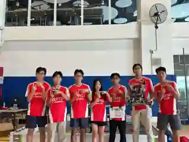

01
Build first.
We moved quickly and built mechanisms directly on the robot. It felt flexible at the beginning because changes could happen immediately.
My first VEX season started with metal, motors, and urgency. I learned to build a competition robot — then learned why engineering is much more than assembling one.

The first season was valuable because the mistakes were visible. Every difficult adjustment forced me to connect the physical robot back to an earlier design decision.
We moved quickly and built mechanisms directly on the robot. It felt flexible at the beginning because changes could happen immediately.
Once systems were packed together, a small drivetrain or mechanism revision could affect structure, clearance, wiring, and access somewhere else.
I began to understand why CAD, BOM planning, deliberate testing, and version history matter before the robot reaches the field.
These are real photos from the year: the team, early robot builds, mechanism close-ups, competition versions, and the CAD work that helped me understand the machine more clearly.
Close-ups made one thing obvious: there is no isolated mechanism. Every bracket, roller, gear, pneumatic element, and support competes for the same space and affects what can be changed later.
A mechanism can work alone and still become difficult once structure, electronics, drivetrain, and access are added around it.
One of my strongest lessons from the season was how expensive a drivetrain or structural change becomes after everything else has already been built.
The field turned small inconsistencies into real performance problems. That made testing and repeatability feel much more important than a mechanism working once.
The strongest takeaway from year one was not “CAD looks professional.” It was that CAD lets a team think through geometry, motion, spacing, and revisions before the robot becomes expensive to change.
That mindset became the bridge into my next season: CAD first, clearer BOM planning, intentional testing, and more robot versions instead of trying to make one build survive everything.
Results gave us a scoreboard. The more important information was everything behind it: which mechanisms held up, which changes were difficult, and which habits needed to change before the next season.
Season one taught me to stop seeing the robot as separate parts.
Geometry, structure, mechanisms, electronics, code, documentation, driver behavior, and testing all affect one another. That systems view became the foundation for what I built next.
A drivetrain issue cannot always be solved in code; a mechanism problem may begin with geometry or structure. The interactions matter.
Good engineering is not only building the current idea. It is making the robot measurable, accessible, and easier to improve.
A rebuild is not evidence that the earlier robot was useless. It is evidence that the team learned enough to make a better decision.